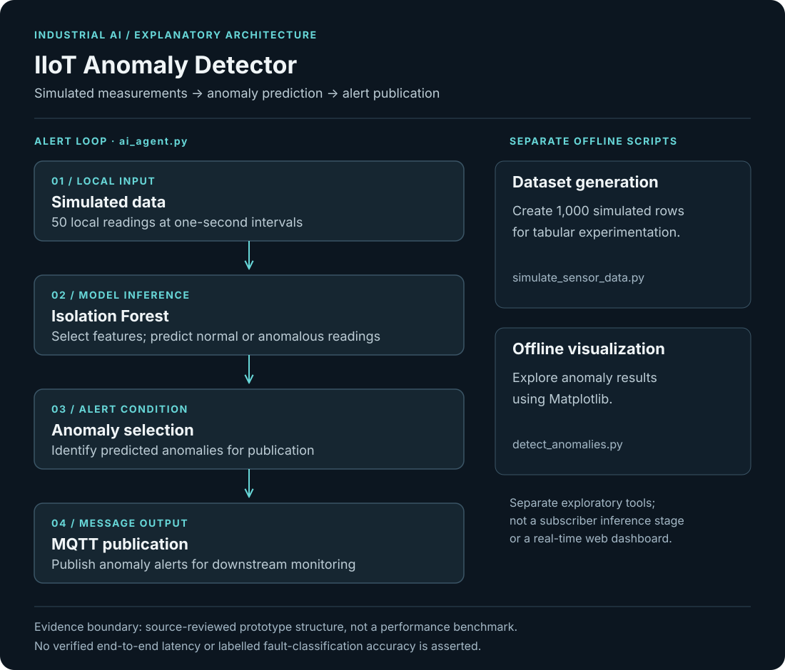

Objective
Explore unsupervised anomaly detection on simulated industrial measurements and publish detected anomalies over MQTT for downstream monitoring.
- Generate simulated industrial telemetry.
- Use unsupervised Isolation Forest predictions without requiring labelled fault classes.
- Publish detected anomalies over MQTT.
- Visualize anomalies and document the limits of prototype evaluation.
My contribution
- Generated simulated industrial measurements for anomaly-detection experiments.
- Applied Isolation Forest to predict anomalous readings.
- Published anomaly alerts over MQTT and visualized results with Matplotlib.
System architecture
Local simulated readings → IsolationForest.predict → anomalous-reading selection → MQTT alert publication. Separate scripts generate tabular data and display anomaly plots using Matplotlib.

Read the architecture as text
- Simulated data — Generate local measurements
- Isolation Forest — Predict normal or anomalous readings
- Anomaly selection — Identify readings to alert on
- MQTT publication — Publish anomaly alerts
- Offline visualization — Separate Matplotlib exploration
Implementation
The repository separates simulated data generation, anomaly visualization and a live-style alert loop. simulate_sensor_data.py creates 1,000 rows. ai_agent.py generates 50 local readings at one-second intervals, calls IsolationForest.predict and publishes anomaly alerts over MQTT. detect_anomalies.py uses Matplotlib for visualization.
Engineering decisions
Isolation Forest was chosen because labelled failure data was not available. The project therefore treats model output as anomaly detection, not as a claim of labelled fault-classification accuracy.
Challenges & debugging
Industrial telemetry needs to be processed continuously rather than only in an offline notebook, while anomaly detection must remain lightweight enough for a practical streaming pipeline.
Validation
Source inspection confirms a 1,000-row data generator and a 50-reading alert loop with one-second intervals. No reproducible end-to-end latency benchmark or verified fault-classification accuracy is established by these scripts.
Outcome & boundaries
A runnable simulated-data anomaly-detection and MQTT alerting experiment. Evaluation remains limited to the documented prototype; performance metrics are not asserted.
Project sources
Implementation notes and available project sources. Public code is linked where available; descriptive diagrams are not independent validation.


{kind=link}